În stînga este slide-ul din curs, în dreapta aceeași figură sau același tabel, calculat în browser din aceleași date. Butonul ▶ modifică parametrul pas cu pas; tabelele și exemplele lucrate se recalculează odată cu el. Abrevieri: VaR (value at risk), CoVaR (VaR-ul sistemului condiționat de o instituție), ΔCoVaR (contribuția instituției la CoVaR), ES (expected shortfall), MES (marginal expected shortfall), LRMES (long-run MES, MES pe termen lung), SRISK (deficitul de capital într-o criză), OLS (metoda celor mai mici pătrate), DGC (degree of Granger causality, gradul de cauzalitate Granger), VAR (model vector autoregresiv), FROM, TO, NET (proporțiile primite de la celelalte bănci, transmise celorlalte și diferența lor), CET1 (common equity tier 1, capital comun de nivel 1), G-SIB (global systemically important bank, bancă de importanță sistemică globală), BCBS (Basel Committee on Banking Supervision, Comitetul de la Basel pentru Supraveghere Bancară), BET (indicele Bursei de Valori București), VIX (indicele volatilității implicite a S&P 500), JPM, BAC, C, GS, MS, WFC (JPMorgan Chase, Bank of America, Citigroup, Goldman Sachs, Morgan Stanley, Wells Fargo), DBK, BNP, SAN, INGA, HSBA (Deutsche Bank, BNP Paribas, Santander, ING, HSBC), TLV (Banca Transilvania), BRD (BRD – Groupe Société Générale).
Patru crize în date · Corelația și dependența în cozi în crize · CoVaR și Delta-CoVaR · MES și SRISK · Rețele de bănci · Politica macroprudențială
Patru crize în date
Portofoliile de bănci din 2005
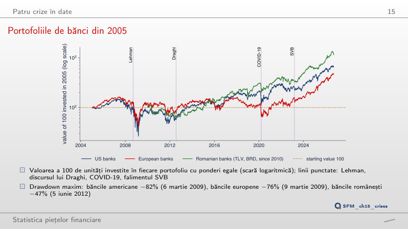
Răspuns
−51%, pe 23 noiembrie 2011, față de −82% cu investiția din 2005: minimul din martie 2009 nu mai este în eșantion. Drawdown-ul maxim depinde de începutul eșantionului; pentru băncile europene, cel mai adînc punct după 2010 este 21 aprilie 2020 (−61%).
Patru episoade comparate
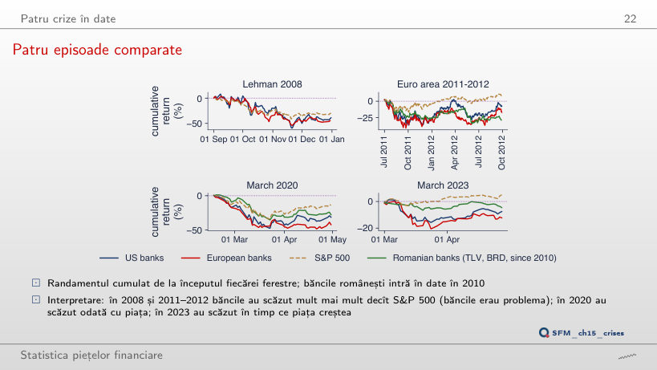
Răspuns
−10,8% în loc de −47,6%: fereastra începe pe 15 martie 2020, după cea mai mare parte a scăderii, iar la final portofoliul are +16,9%. Randamentul cumulat se măsoară de la începutul ferestrei, deci comparația dintre episoade depinde de această dată.
Corelația și dependența în cozi în crize
Corelația dintre bănci crește în crize
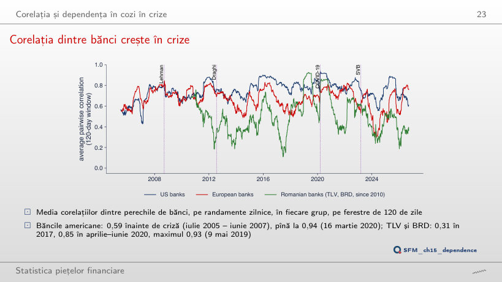
Răspuns
La 0,96, pe 6 februarie 2019, tot în afara unei crize (cu 120 de zile: 0,93 pe 9 mai 2019). Pentru o singură pereche de acțiuni, o fereastră scurtă dă valori extreme mai mari; maximul băncilor americane rămîne pe 16 martie 2020 (0,95).
Interpretarea corelațiilor: cînd diversificarea nu mai funcționează
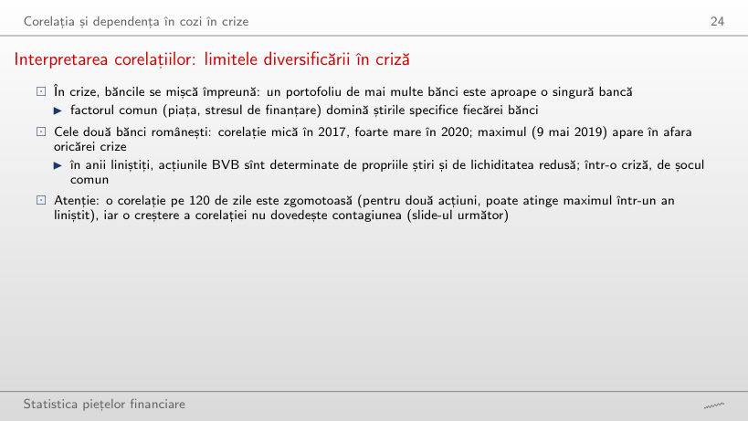
Media corelației medii dintre perechile de bănci, pe perioade (cifrele de pe slide-ul precedent)
Răspuns
În 2019: 0,80, peste 2020 (0,76) și peste 2011 (0,56). Corelația pe 120 de zile a două acțiuni este zgomotoasă și poate atinge maximul într-un an liniștit, cum arată și maximul zilnic din 9 mai 2019.
Contagiune sau interdependență? Forbes și Rigobon (2/2)
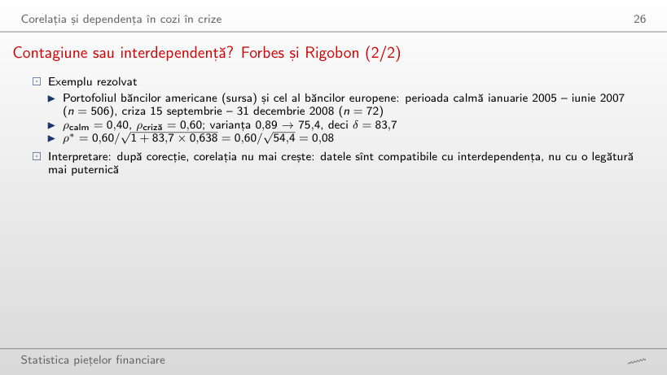
Exemplu lucrat: corecția Forbes–Rigobon
Răspuns
Nu: ρ_criză = 0,74, dar varianța portofoliului american crește de 47 de ori (δ = 46,0), deci ρ* = 0,74/√(1 + 46,0 × 0,451) = 0,16. Dintre cele patru ferestre, doar martie 2023 dă ρ* = 0,42, puțin peste 0,40, pentru că volatilitatea a crescut puțin (δ = 3,7).
Dependența în cozi dintre bănci și piețe
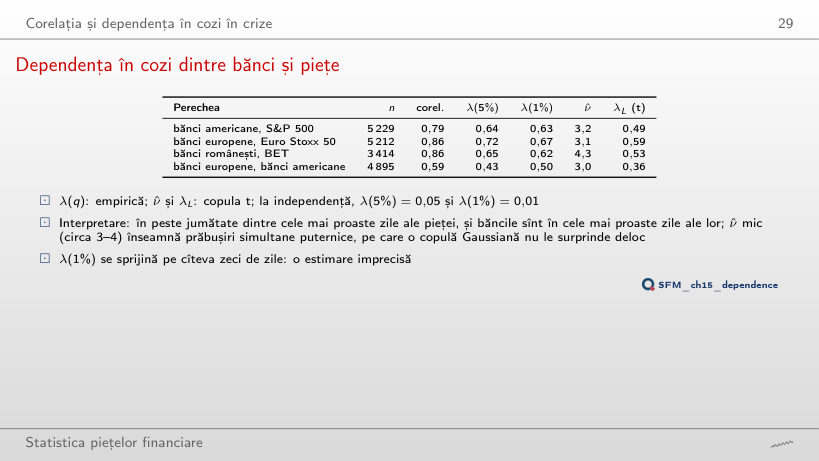
Dependența în cozi (tabelul de pe slide și λ(q) la nivelul ales)
Răspuns
Crește la 0,73, față de 0,64 la 5%; la independență ar fi 0,005. Estimarea se sprijină pe cele mai proaste 26 de zile ale S&P 500, deci este imprecisă: pentru băncile europene λ(0,5%) scade la 0,58.
Zile proaste comune
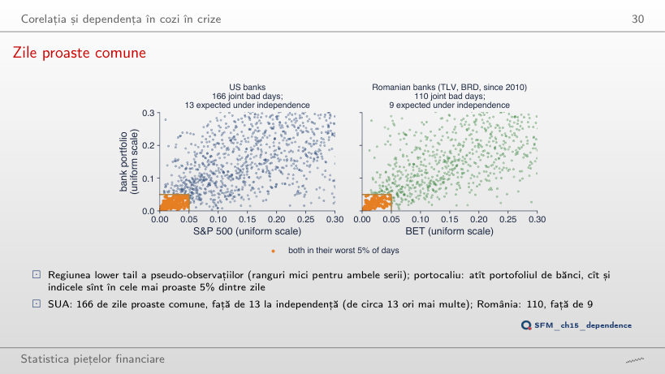
Răspuns
De circa 63 de ori: 33 de zile față de q²n = 0,0001 × 5 229 = 0,52, față de 12,7 ori la q = 5%. Raportul crește spre coadă: zilele foarte proaste vin împreună.
CoVaR și Delta-CoVaR
Exemplu rezolvat: JPMorgan Chase și S&P 500
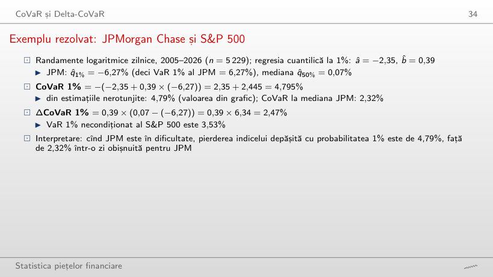
Exemplu lucrat: CoVaR din regresia cuantilică
Răspuns
Mai mic: 2,45%. Cuantila JPM (−3,07%) și termenul liber (−1,26) sînt mai puțin extreme, iar panta rămîne 0,39; ΔCoVaR 5% = 1,22%, aproape jumătate din 2,47%.
CoVaR într-un grafic
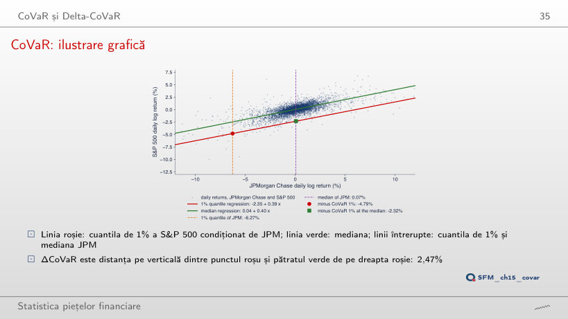
Răspuns
Aproape deloc: 0,385, 0,390 și 0,401, față de 0,390 la 1% și 0,398 la mediană. Se mută termenul liber, de la −2,35 la −0,86: dreptele sînt aproape paralele, deci ΔCoVaR scade pentru că distanța dintre cuantilele JPM scade.
ΔCoVaR 1% pentru 13 bănci
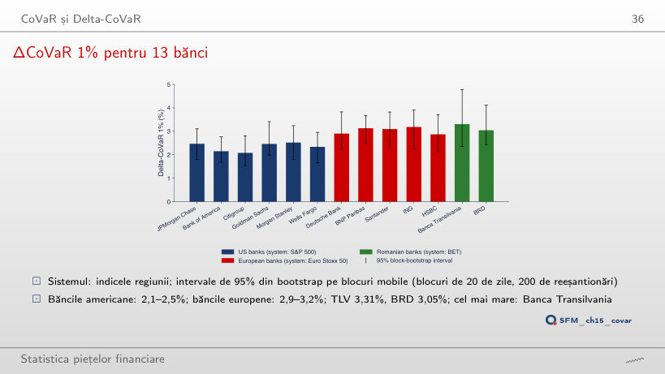
Răspuns
Tot băncile europene: 1,43–1,68% (Santander 1,68%), față de 1,12–1,33% la cele americane; TLV 1,51%, BRD 1,45%. La 1%, cea mai mare valoare era a TLV (3,31%).
Interpretarea ΔCoVaR
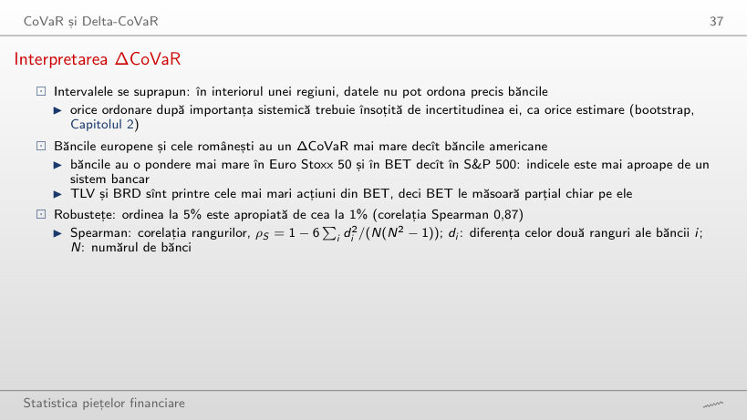
CoVaR și ΔCoVaR 1% pentru cele 13 bănci (cifrele din graficul precedent) și ΔCoVaR la α₂
Răspuns
0,84, față de 0,87 la 5% și la 2,5%: ordinea băncilor rămîne apropiată; se schimbă nivelul ΔCoVaR (0,74–1,20% la 10%), nu ordinea.
Exemplu rezolvat: Banca Transilvania și BET
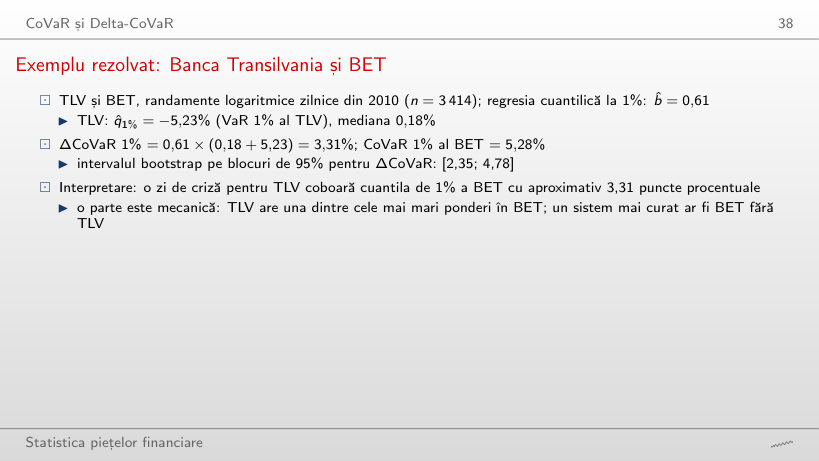
Exemplu lucrat: ΔCoVaR între mediana și starea de criză
Răspuns
1,51%, mai puțin de jumătate din 3,31%: panta scade de la 0,611 la 0,542, iar distanța dintre mediana TLV și cuantila ei scade de la 5,41 la 2,79 puncte procentuale; 0,542 × 2,79 = 1,51.
VaR nu este ΔCoVaR
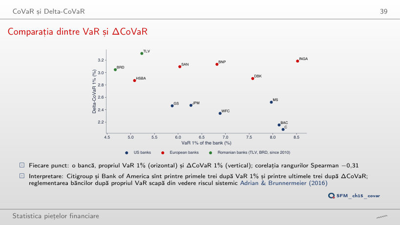
Răspuns
Nu: devine +0,20 (la 2,5%: −0,13; la 5%: +0,03). Cu 13 bănci, niciuna dintre aceste corelații, nici −0,31 de la 1% (p = 0,31), nu este semnificativă la 5%; ce rămîne este că VaR-ul propriu nu ordonează băncile după ΔCoVaR.
ΔCoVaR 1% în timp
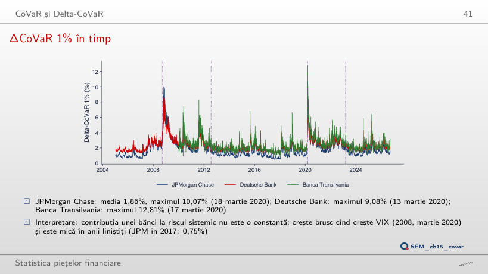
Răspuns
Pe 28 octombrie 2008 (7,58%), nu în martie 2020 ca la 1% și 5%; în martie 2020 ajunge la 7,52%. Cele două vîrfuri sînt aproape egale, deci data maximului depinde de α.
MES și SRISK
Exemplu rezolvat: MES din zece zile
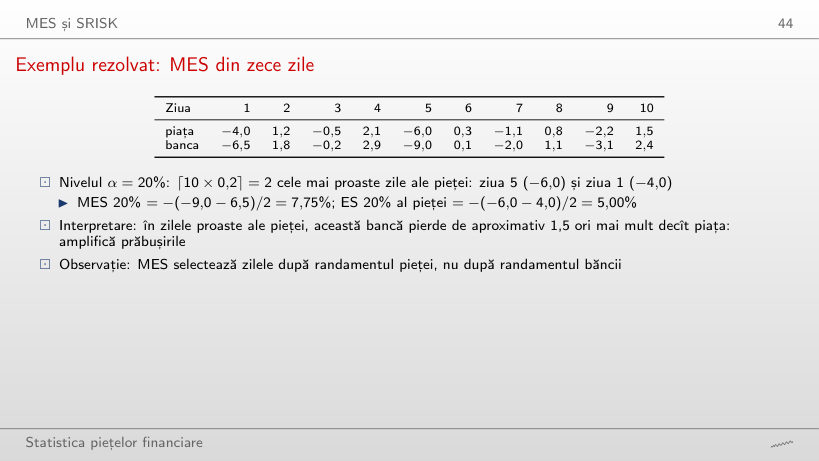
Exemplu lucrat: MES ca medie a randamentelor băncii în zilele din coada pieței
Răspuns
6,20% = −(−9,0 − 6,5 − 3,1)/3: se adaugă ziua 9 (piața −2,2%, banca −3,1%). ES 30% al pieței = 4,07%, iar MES scade față de 7,75%, pentru că a treia zi este mai puțin extremă.
MES 5% pentru 13 bănci
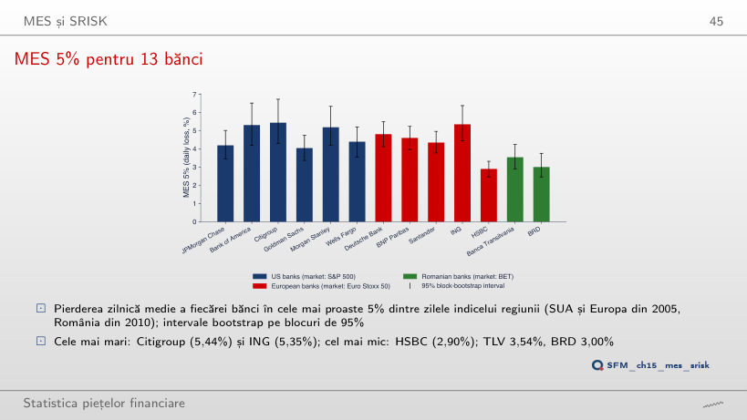
Răspuns
Citigroup, 10,64%, aproape la egalitate cu Bank of America (10,62%); HSBC rămîne cea mai mică (4,86%). La 1%, MES se sprijină pe 53 de zile ale S&P 500.
Interpretarea MES și a ΔCoVaR
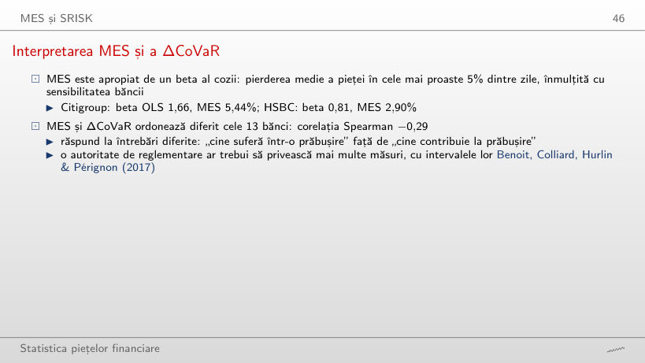
MES, beta OLS, ES al pieței, LRMES și efectul de levier de echilibru (cifrele de pe slide-uri)
Răspuns
Devine mai negativă: −0,58, față de −0,29 la 5%. Cele două măsuri răspund la întrebări diferite, iar la același nivel de 1% ordinea lor diferă și mai mult.
Studiu de caz: a prezis MES pierderile din 2008?
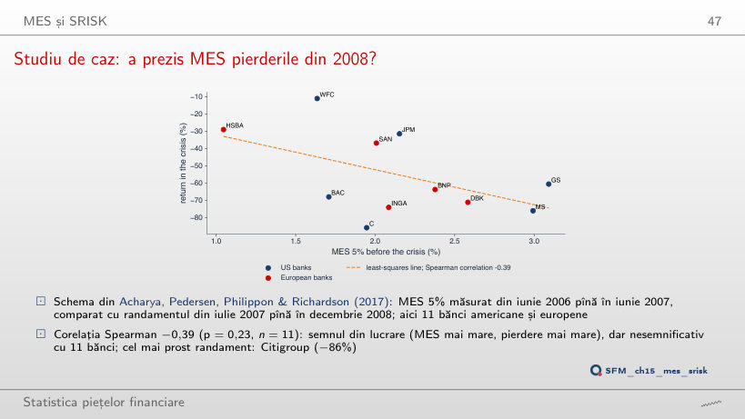
Răspuns
Nu: −0,37 (p = 0,26); la 10%: −0,41 (p = 0,21). Semnul este cel din lucrare, dar cu 11 bănci nu este separat de zgomot.
De la MES la LRMES
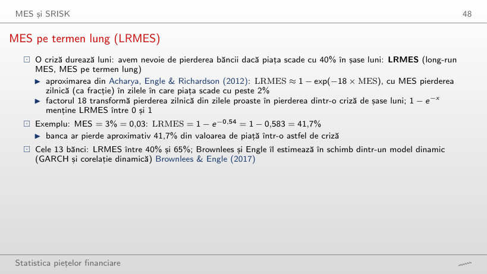
Exemplu lucrat: de la MES la LRMES
Răspuns
66,0% = 1 − e^(−1,08), nu 83,4% = 2 × 41,7%: funcția 1 − e^(−x) crește din ce în ce mai încet și rămîne sub 100%.
SRISK: deficitul de capital într-o criză
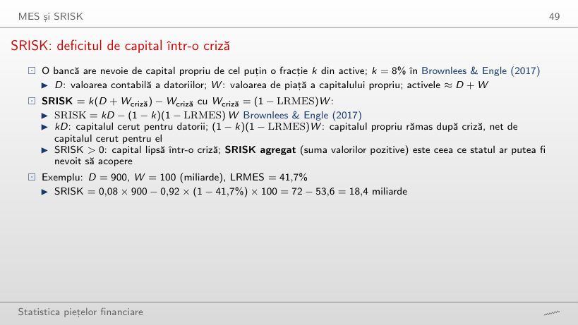
Exemplu lucrat: SRISK
Răspuns
45,2 miliarde = 72 − 0,92 × 0,583 × 50 = 72 − 26,8. Efectul de levier L = 950/50 = 19 este mult peste L* = 7,7: o scădere a valorii de piață a capitalului mărește deficitul.
SRISK și efectul de levier
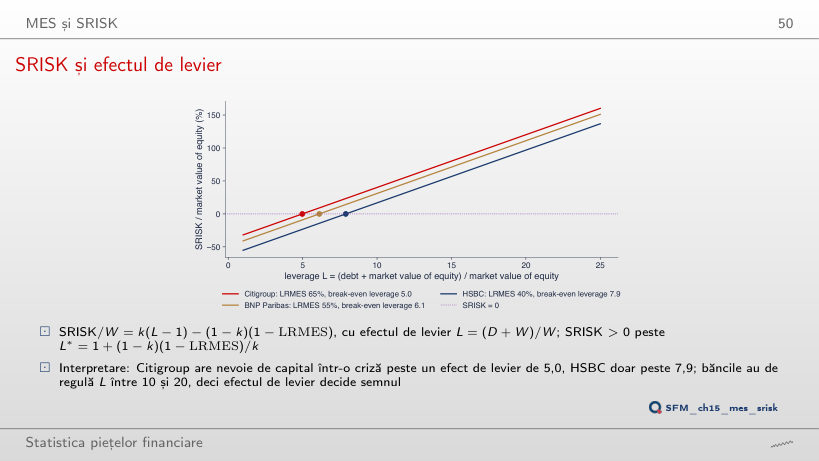
Răspuns
6,9, față de 5,0 cu k = 8%: un k mai mic cere mai puțin capital, deci pragul L* = 1 + 0,945 × 0,345/0,055 crește. Pentru HSBC pragul urcă la 11,3.
Rețele de bănci
Rețele Granger în timp
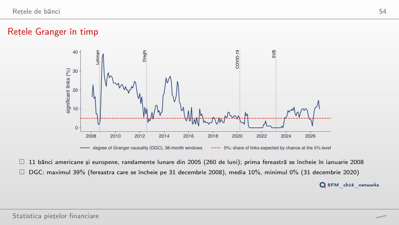
Răspuns
35,5% (fereastra care se încheie în ianuarie 2010), față de 39,1% cu 36 de luni; media crește de la 9,6% la 12,0%, pentru că anii 2007–2009 rămîn în mai multe ferestre.
Două rețele: 2007–2009 și 2017–2019
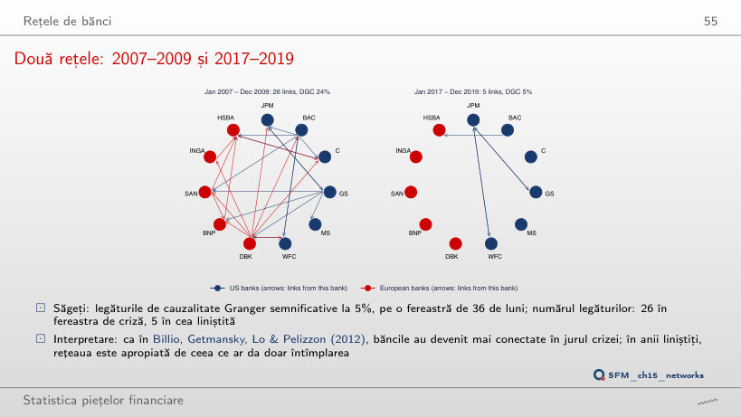
Răspuns
43 (DGC 39%), față de 26 în 2007–2009; fereastra liniștită are 7. Fereastra care se încheie în decembrie 2008 este maximul din graficul precedent.
Conectivitatea Diebold–Yilmaz
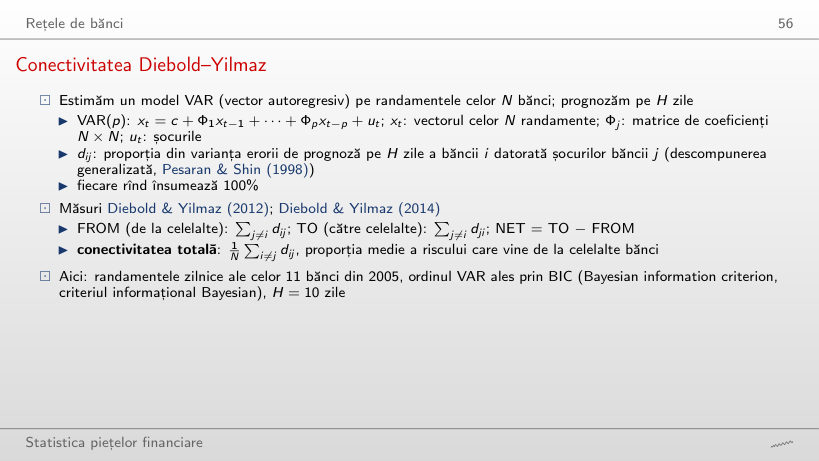
Exemplu lucrat: o proporție din descompunerea varianței și conectivitatea totală
Răspuns
80,6%, practic ca la H = 10 (80,65%); conectivitatea totală este 78,0% față de 78,3%. Randamentele zilnice sînt aproape imprevizibile, deci descompunerea vine aproape în întregime din corelația șocurilor din aceeași zi, nu din dinamica VAR.
Tabelul de conectivitate
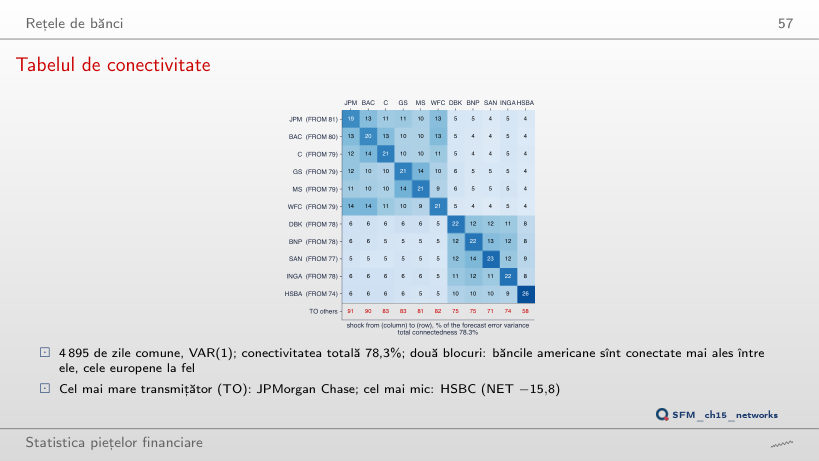
Răspuns
Rămîne 78,3%: de la H = 5 valoarea nu se mai schimbă la prima zecimală. Coeficienții VAR(1) ai randamentelor zilnice sînt mici, deci efectele unui șoc dispar în cîteva zile.
Interpretarea tabelului de conectivitate
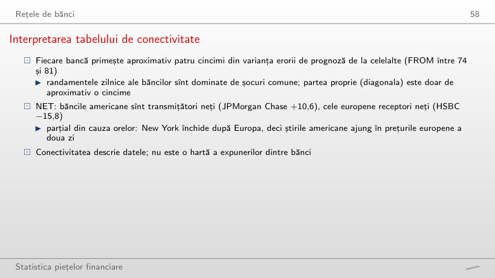
Partea proprie, FROM, TO și NET (în %, orizontul de 10 zile)
Răspuns
HSBC, −20,1, ca pe întreaga perioadă; băncile americane rămîn transmițători neți (JPMorgan Chase +8,8, Bank of America +11,3), iar conectivitatea totală este 80,2%.
Conectivitatea totală în timp
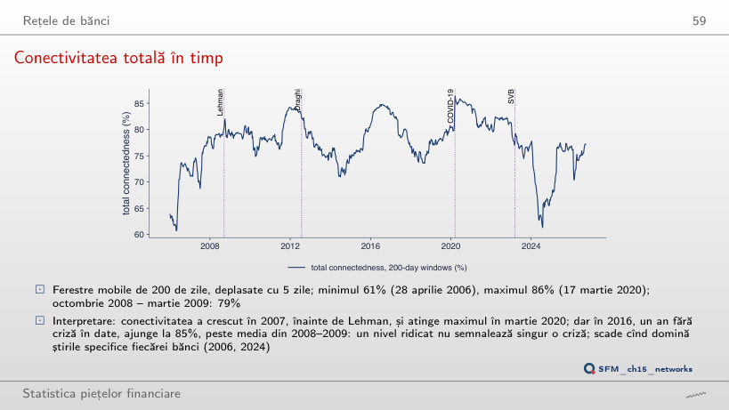
Răspuns
Da: 87,9% pe 17 martie 2020. Maximul din 2016 urcă la 86,0%, iar minimul coboară la 54,5% (20 mai 2024): ferestrele scurte dau extreme mai mari în ambele direcții.
Politica macroprudențială
Amortizoarele de capital din Basel III
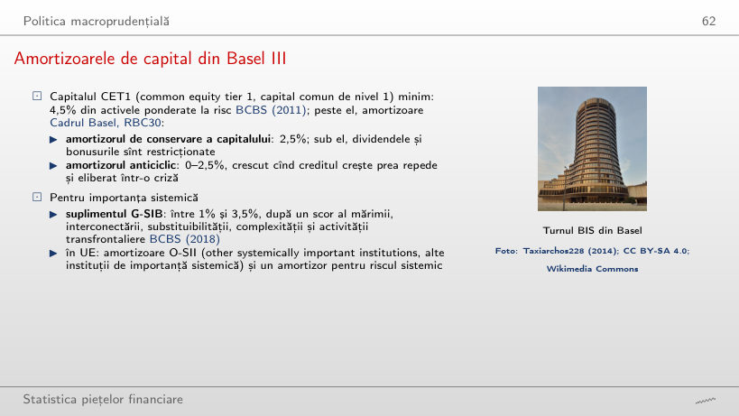
Exemplu lucrat: cerința de capital CET1 a unei bănci
Răspuns
10,5% = 4,5 + 2,5 + 2,5 + 1 din activele ponderate la risc (BCBS (2011); BCBS (2018)). Cu suplimentul maxim de 3,5% ar fi 13%.
Datele cursului din data/market (EODHD, ianuarie 2005 – 18 septembrie 2026): prețurile de închidere ajustate zilnice ale celor 13 bănci și închiderile S&P 500, Euro Stoxx 50 și BET; băncile românești din 2010. Coeficienții regresiilor cuantilice, intervalele bootstrap pe blocuri ale ΔCoVaR 1% și ale MES 5%, parametrii copulei t, ΔCoVaR variabil în timp și conectivitatea totală pe ferestre mobile vin din codul capitolului (Quantlets/Ch_15). Browserul recalculează din prețuri randamentele, portofoliile de bănci, episoadele, corelațiile, testul Forbes–Rigobon, dependența empirică în cozi, cuantilele, CoVaR și ΔCoVaR, MES, LRMES, SRISK, rețelele Granger și tabelul Diebold–Yilmaz. Alte niveluri α, ferestre, praguri, perioade și orizonturi sînt rulări suplimentare ale aceluiași cod. Exemplele cu MES din zece zile, LRMES, SRISK și amortizoarele Basel III folosesc cifrele de pe slide-uri; cerințele de capital urmează BCBS (2011) și BCBS (2018).